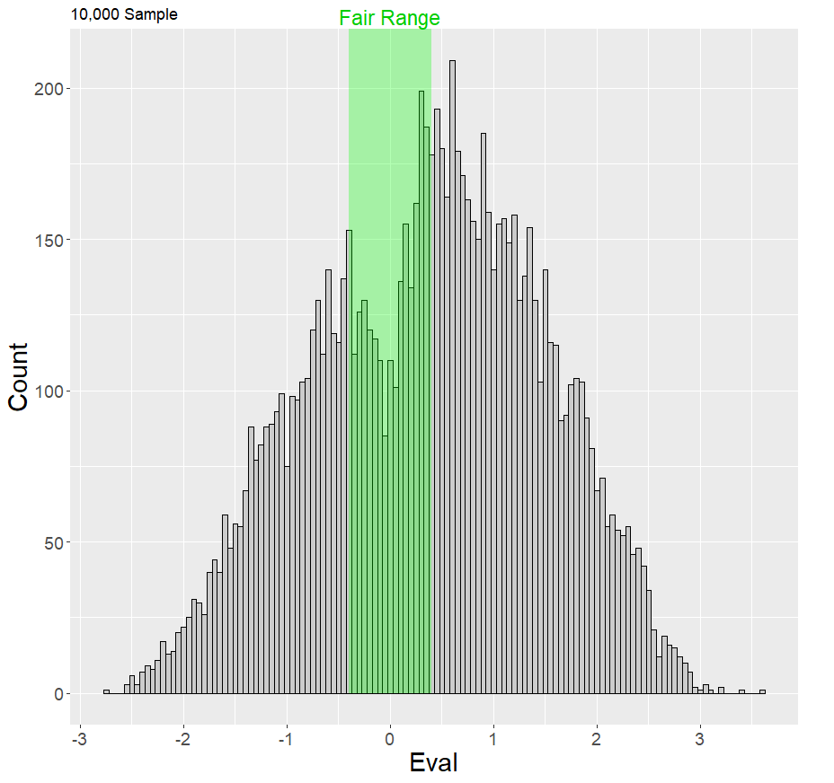

J-Chess (Jumble Chess or Jukes Chess) is a chess variant where each side’s back rank is randomly arranged (bishops start on opposite colours). It is similar in spirit to Chess960, but castling is not a rule and so the king does not need to be between the rooks. This variant uses independent randomisation for both White and Black – so the two back ranks need not mirror each other, producing far more distinct starting positions.
For one side, there are 2,880 possible starting positions. Doing the randomising for both sides independently gives 2,880 × 2,880 = 8,294,400. So there are over 8 million possible starting positions in J-Chess.
A sample of 10,000 positions were analysed with Stockfish 17.1 at 1 second per position using Intel i9 hardware. 2,189 positions were within the ±0.4 threshold, so about 22% of positions are fair. Scaling up, that's 1,815,644 fair positions in total – nearly 2 million.

The “Generate Fair Position” button generates a random J-Chess position and runs a short Stockfish evaluation. If the eval is outside ±0.4 it repeats with a new position until a fair evaluation is found. With ~22% fair, there is roughly a 50% chance to find a fair positions within 3 tries and over 90% within 10 tries.
I dislike deep opening preparation. Chess960 moves in the right direction, but you can still pre-analyse a select number of positions. Perhaps 10-20 positions analysed deeply, or 100 positions lightly analysed. Here, nearly 2 million fair positions make memorisation pointless.
Removing castling increases creativity and raises the count (960 → 2,880 per side). Independent (not mirrored) back ranks avoid repetitive “kings facing” patterns and yield varied king safety themes: opposite-side attacks, same-side races, or slow manoeuvring – you work with what you get, starting from equality.